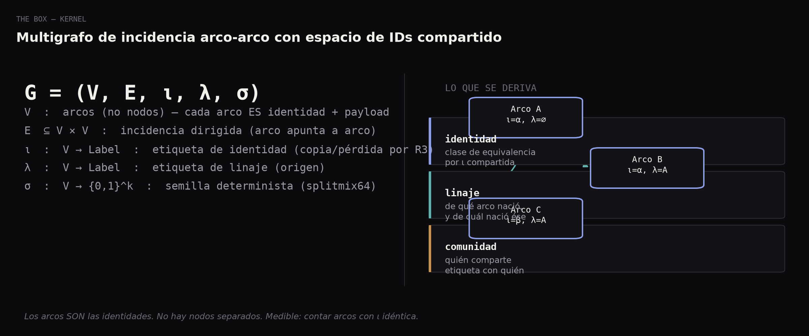
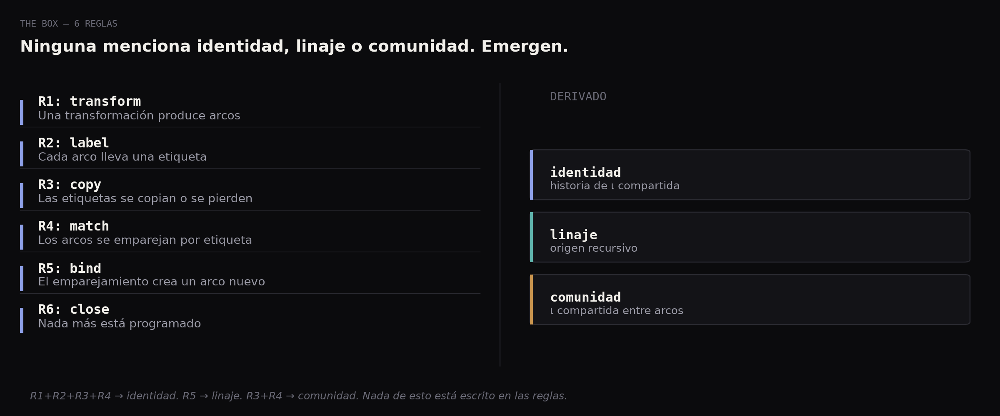
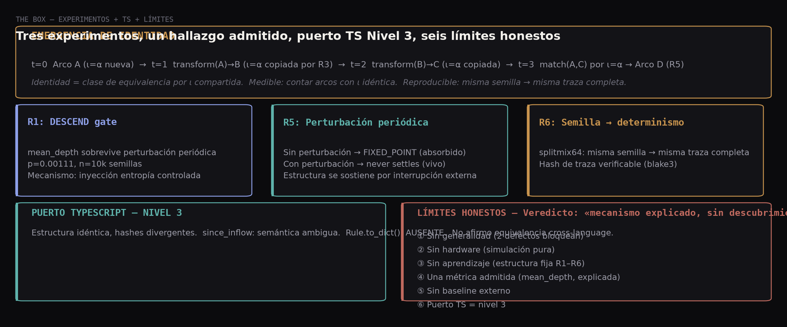
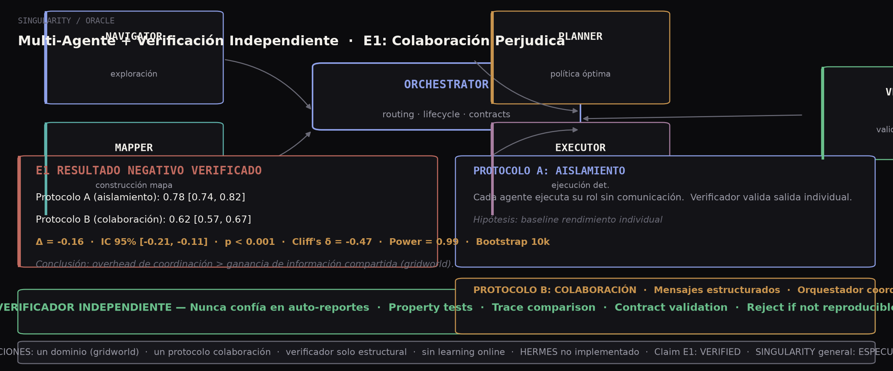
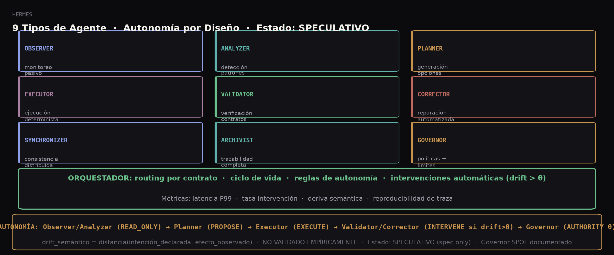
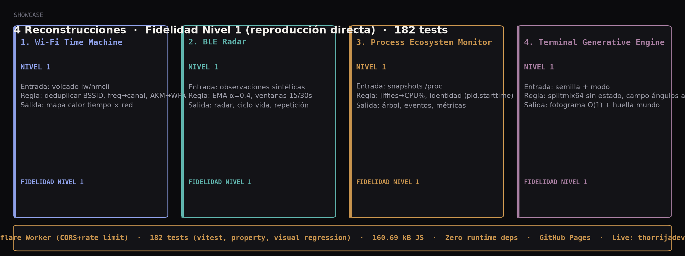
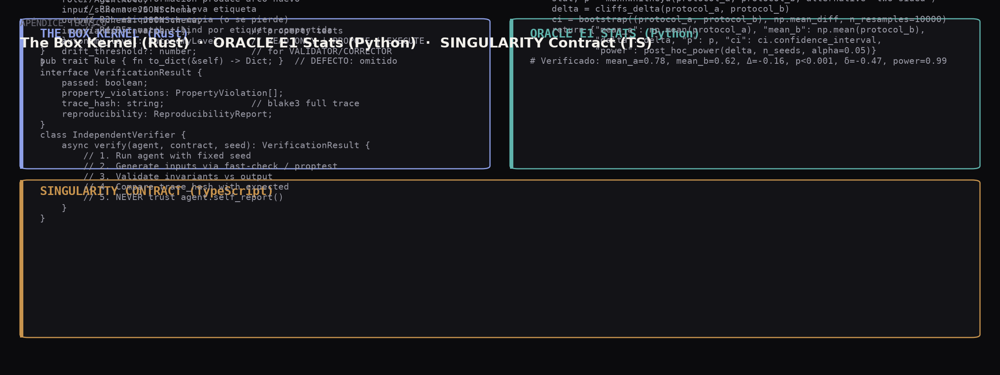

Nada se afirma sin instrumento.
Nada se mide sin trazabilidad.
Nada se concluye sin intento de refutación.
1 = reproducción directa
2 = reconstrucción fiel
3 = parcial documentada
4 = modelo conceptual
ORACLE E1: Δ=−0.16, p<0.001
The Box: mecanismo explicado
Defectos: since_inflow, Rule.to_dict
Sustrato generativo mínimo · 6 reglas → identidad, linaje, comunidad · Rust + TS · Nivel 3 (TS)
Multi-agente + verificación · 5 agentes + Verifier · E1 VERIFIED Δ=−0.16
Orquestación operacional · 9 tipos + Governor · SPECULATIVO (spec only)



Loop cognitivo: percibir → razonar → actuar → consolidar
Memoria episódica: SQLite + vector store (embeddings locales)
Herramientas: código, web, terminal, sistema de archivos
Modelos: 20 GB (GGUF local vía Ollama)
Verificación: property tests + trace hashing + replay
Estado: ACTIVO · nox-cognitive-runtime
Persistencia real (estado sobrevive reinicios)
Verificación integrada en cada ciclo (blake3)
Modelos locales: zero API calls, zero telemetría
Herramientas puras con contrato tipado (JSON Schema)
Reproducibilidad: semillas fijas + hash de traza
Sin 'AGI' marketing: fidelidad declarada
Stack: FastAPI + React + WebSockets + Ollama
Memoria: 26 GB (GGUF merged + safetensors + datasets)
Herramientas: código, web, terminal, FS, planificador
Ciclo: spawn → plan → execute → verify → consolidate → sleep
Autonomía: 9 tipos de agente (Observer → Governor)
Repo: echo-cognitive-organism · project_life/echo
Observer · Analyzer · Planner · Executor · Validator
Corrector · Synchronizer · Archivist · Governor
drift_semántico = distancia(intención, efecto) — NO validado
Governor = SPOF documentado
Intervención automática: drift > θ → Corrector
Valor: pensamiento riguroso antes de código
Riesgo: spec hermética que no sobreviva implementación



Spec ejecutable · Property tests · Verificador independiente · Reproducibilidad (semillas+hash+bootstrap) · Fidelidad declarada · Negativos publicados · Defectos documentados
Verificación independiente · Fidelidad declarada · Resultados negativos publicados · Defectos documentados — en los cinco sustratos: The Box, NOX, ECHO, SINGULARITY/ORACLE, HERMES
ORACLE E1: colaboración perjudica · The Box: mecanismo explicado sin descubrimiento · Defectos documentados para no repetir
| Dimensión | The Box | NOX | ECHO | ORACLE | HERMES |
|---|---|---|---|---|---|
| Defectos estructurales | bloquea | doc | doc | doc | — |
| Sin hardware | bloquea | alcance | bloquea | alcance | alcance |
| Sin aprendizaje | bloquea | doc | alcance | doc | doc |
| Sin baseline externo | bloquea | doc | alcance | alcance | alcance |
| Serialización incompleta | bloquea | — | doc | doc | — |
| Verificación no exhaustiva | doc | alcance | alcance | alcance | alcance |
| Spec no implementada | — | — | bloquea | — | bloquea |
| Métricas deriva no validadas | — | doc | alcance | alcance | alcance |
Resolver since_inflow + Rule.to_dict → ¿composición recursiva?
E1: overhead > ganancia → ¿topologías que inviertan?
Estructural → semántica (identidad/linaje)
¿Interfaz sensor/actuador que preserve determinismo?
Drift sin ground truth → ¿cómo medir?
Rust↔TS estructura OK, hashes divergen → ¿nivel 2?
cargo test --package the-box
npm test && npm run build
pytest experiments/e1_negative.py --bootstrap 10000
cargo test --workspace
cat hermes/SPEC.md
LO QUE PIDO: gente que exija más rigor del que tengo hoy.
NO traigo credenciales inventadas ni métricas infladas.
since_inflow + Rule.to_dict → generalidad · PL theory, type systems, formal verification
topologías donde colaboración > aislamiento · multi-agent, comm protocols, exp design
de SPECULATIVO a VERIFIED · distributed systems, observability, correctness
Esta presentación como sitio web interactivo — generado automáticamente desde la misma fuente

No destaco por mis notas.
No soy popular.
Simplemente me considero un adolescente
bastante ambicioso que quiere aprender
de mucha gente.
Lo que ves aquí — The Box, NOX, ECHO,
SINGULARITY, HERMES, el Showcase —
no es 'deberes'. Es lo que construyo
cuando nadie me obliga.
Mi disciplina es simple:
si no se puede ejecutar, medir y repetir,
no existe.
Los defectos los documento.
Los negativos los publico.
La fidelidad la declaro.
Busco gente que exija más rigor
del que yo tengo hoy.
Gracias por leer hasta aquí.